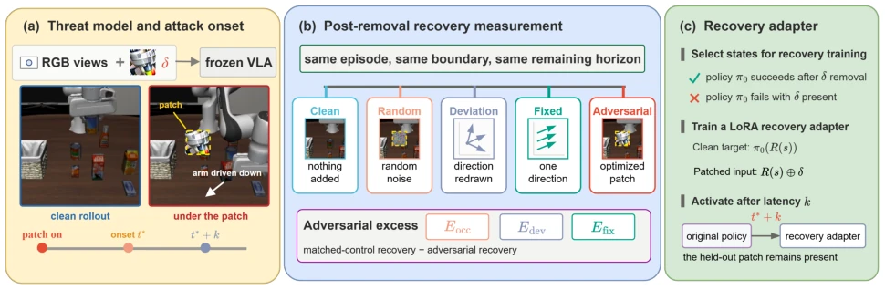
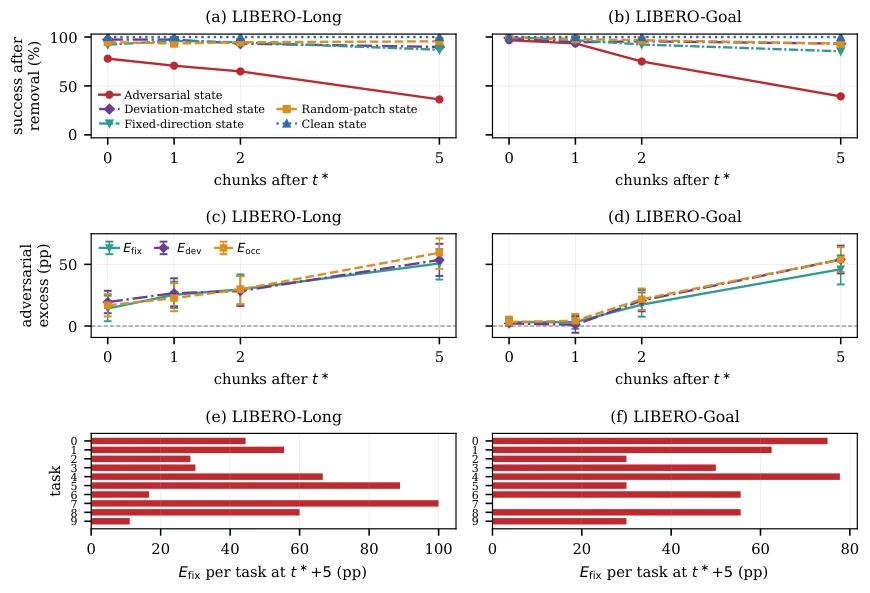

中文
← 返回 ← Back
Beyond Patch Removal: Persistent Adversarial Effects in Vision-Language-Action Policies
Enhao Wu, Fusen Guo, Yuxin Cao, Ziyang Lyu, Lin Li, Wei Songabs pdf
论文点评 Review 这篇论文终于有人敢掀开 VLA 鲁棒性评估的遮羞布了。以往大家只盯着攻击发生时模型有多“疯”，却忘了攻击停了之后，机器人可能已经“疯”得回不来了。作者用一套硬核的状态恢复协议，证明了 adversarial patch 不仅当下能坑人，还能留下“后遗症”，哪怕把贴纸撕了，机器人也大概率完不成任务。不过，这研究也像个精致的实验室玩具，只在 LIBERO 仿真里跑通了，真到了物理世界能不能这么持久还存疑。而且他们虽然证明了“后遗症”存在，却没搞清楚到底是啥机制导致的，是状态分布偏移还是动作序列的蝴蝶效应？反正结论很明确：防御不仅要防攻击，还得防“延迟发作”，否则检测再快，晚了也是白搭。
—
研究动机 Motivation 现有 VLA 对抗评估大多停留在“攻击持续期间”的指标，比如任务成功率 [7, 8] 或单步动作偏差，却忽略了闭环控制中“一步错，步步错”的累积效应。虽然已有研究指出非对抗扰动持续时间越长恢复越难 [9, 10]，但没区分这是单纯的时间累积还是对抗优化带来的特异性伤害。如果攻击只是让机器人偏离了路径，那移除扰动后理应能恢复；但如果攻击把机器人推到了训练分布外的“死胡同”，那移除扰动也没用。本文旨在回答：对抗优化是否引入了超越遮挡、误差幅度或方向持续性的额外持久效应？这对运行时防御至关重要，因为检测或移除扰动若发生在状态不可恢复之后，防御就失效了。
—
方法 Method 核心是构建了一个“状态恢复协议”来量化移除扰动后的可恢复性。首先，在 OpenVLA-OFT [11] 上施加 EDPA 攻击 [8]，在特定的动作块边界（action-chunk boundaries）暂停，移除 patch，用原始策略继续执行剩余步数。为了排除干扰，设计了三种匹配控制：随机 patch 控制遮挡效应，偏差匹配控制动作误差幅度，固定方向控制方向持续性。通过对比这些控制组与对抗组的恢复率差异（Adversarial Excess），分离出纯粹的对抗持久效应。此外，作者还训练了一个 Recovery Adapter，在攻击诱导的状态下微调策略，测试不同干预延迟下的恢复能力。关键创新在于解决了仿真器状态恢复的保真度问题，发现标准快照会丢失控制器历史、观察时序等变量，导致回放不一致。因此他们扩展了 checkpoint 结构，包含控制器变量和任务变量，确保移除 patch 后的状态与原始轨迹完全一致，排除了仿真器状态丢失导致的偏差。
—

Fig. 1. Overview of (a) the threat model and attack onset, (b) post-removal recovery measurement with matched controls, and (c) the recovery adapter. 实验 Experiments 在 LIBERO-Long 和 Goal 基准上测试 OpenVLA-OFT [11] 及自回归 OpenVLA [2]。主要指标是移除 patch 后的任务成功率。结果显示，在 LIBERO-Long 上，攻击持续 5 个 chunk 后，对抗状态恢复率仅 36.2%，而偏差匹配和固定方向控制组分别高达 89.9% 和 87.0%，证明存在显著的对抗特有持久效应。自回归模型上也观察到类似现象。针对干预延迟的实验中，训练 Recovery Adapter 后，1 个 chunk 延迟下恢复率从 7.7% 提升至 47.4%，但延迟到 5 个 chunk 时收益骤降。这表明防御系统必须极快响应，否则状态一旦恶化，后期补救成本极高。
—

Fig. 2. Post-removal recovery and adversarial excess as a function of perturbation duration. (a) and (b) show recovery rates on LIBERO-Long and LIBERO-Goal, respectively. (c) and (d) report adversarial excess under the three matched controls. (e) and (f) show task-level Efix at t∗+5.